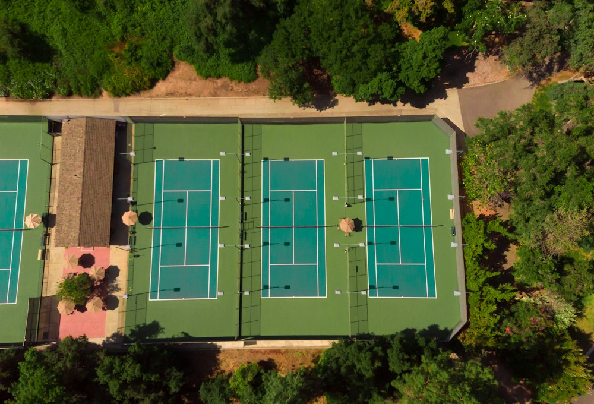
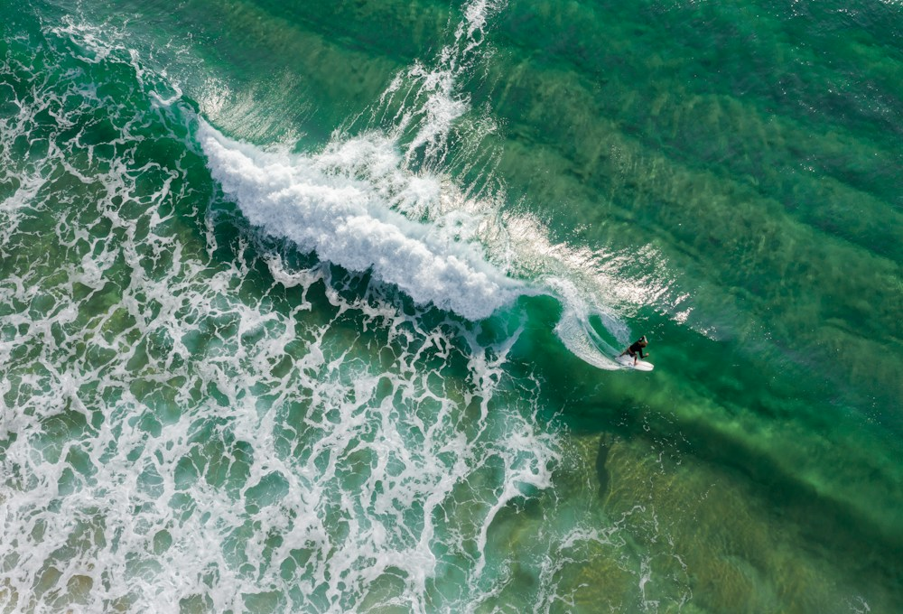
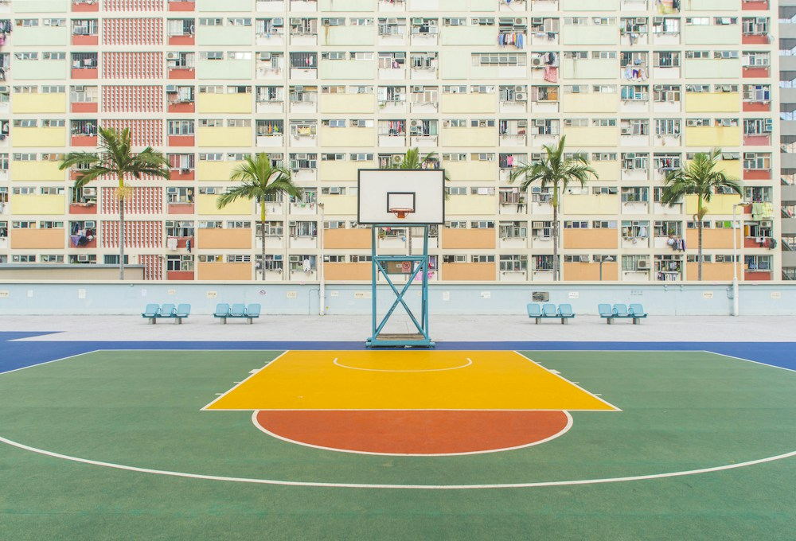
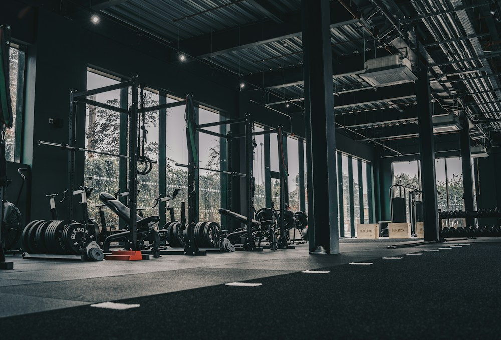
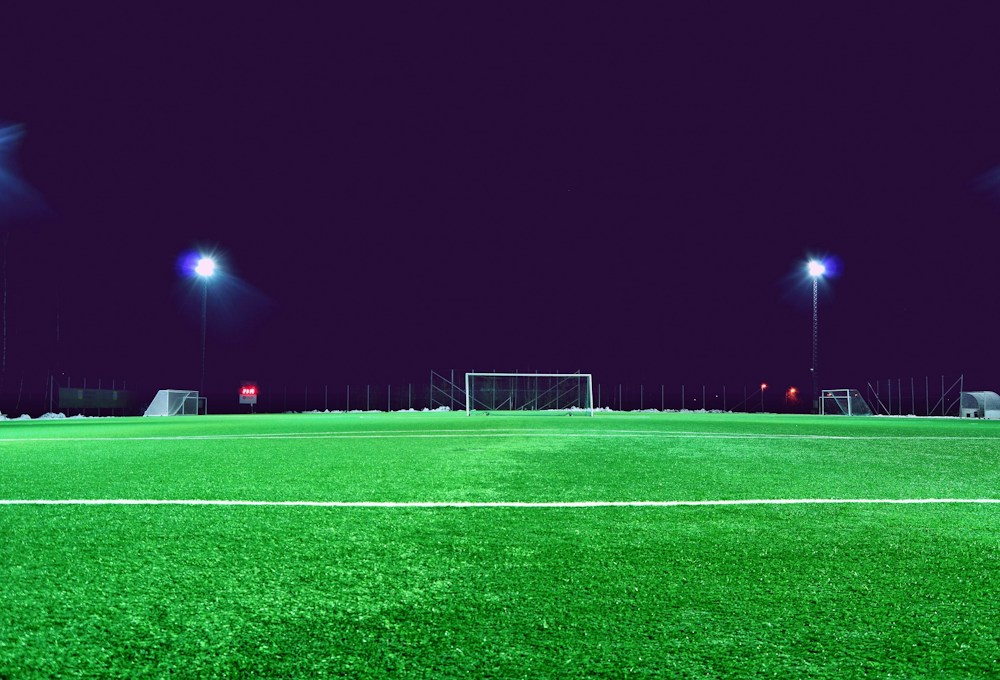
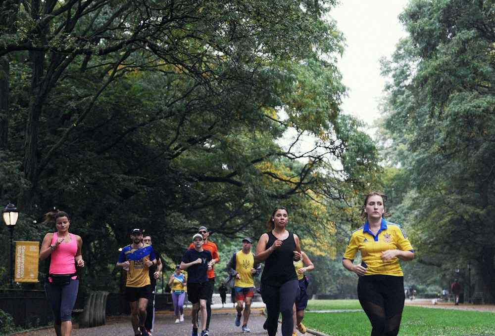

Perto de ti
6 eventos de exemplo
14–15 nov. 2026





O melhor do desporto é quem joga contigo.
O desporto junta-nos.
Lisboa e arredores
6 eventos de exemplo
14–15 nov. 2026






O melhor do desporto é quem joga contigo.